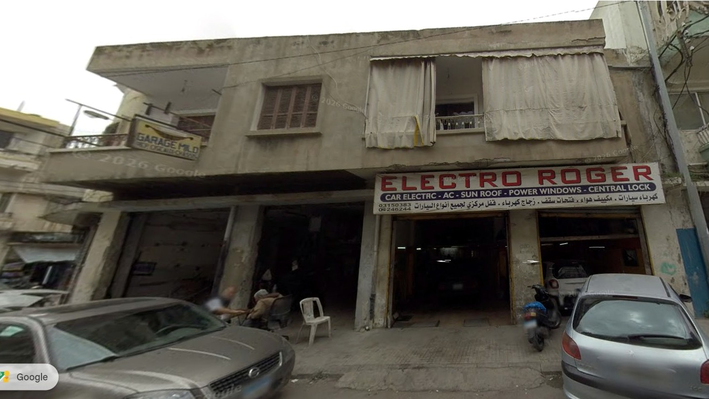
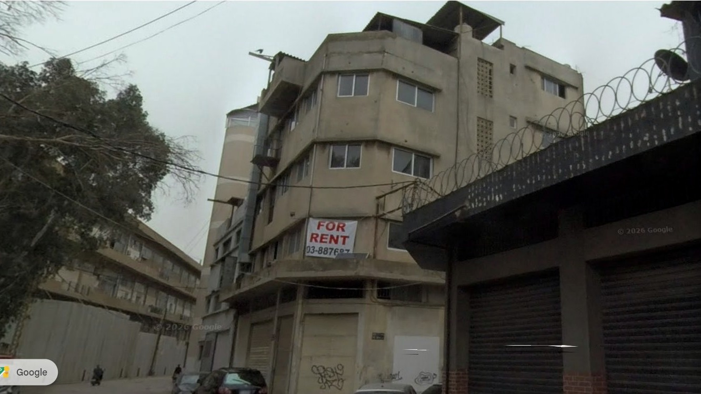
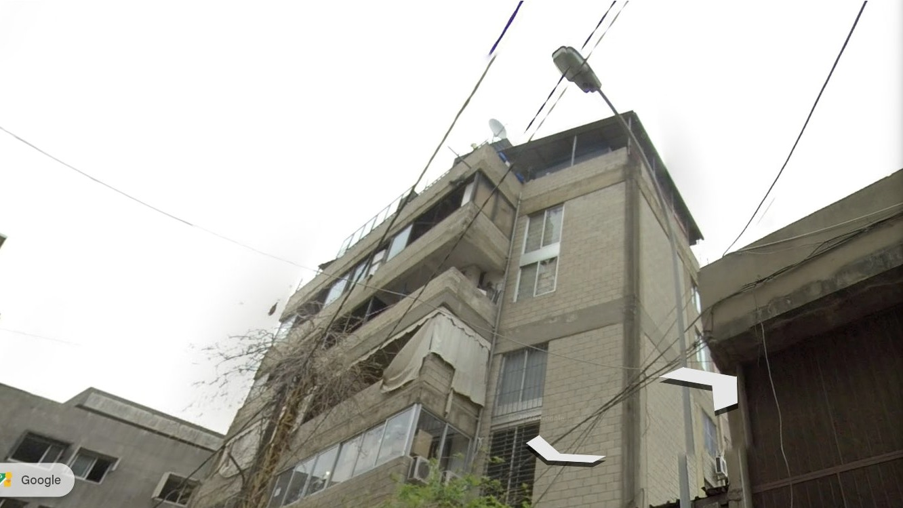

01 / 02 · STORY + ISSUE
Entering Beirut · Bourj Hammoud
Add to Connect
Project position
They added to accommodate.
I add to connect.
1920s–30sArrival becomes neighbourhoodhomes · schools · churches
1940s–50sIndustry + housing grow togetherwork + life
1960sRules become formalgrowth continues
1975–90War changes occupationdamage · displacement
2011+Affordable space is pressuredsubdivision · roof rooms
2026Field survey asks what remains visibleuse · age · vertical change
Field observation
The join stays visible.
Different uses, materials and roof conditions occupy the same building.



Published history gives district context, not parcel-level cause. Screenshots show visible conditions only. Urban distances and areas measured from the professor’s cadastral survey.